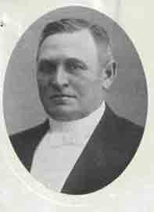
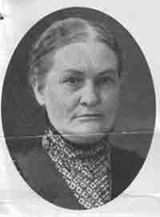

|
VIBY i gamla tider |
|||||
|
Ola Persson Håslövs Boställe
|
|||||
|
|
 |
 |
|||
Ola PerssonFödd i Rinkaby f. 3/4 1846 d 29/9 1932
Föräldrar: Per Brorsson Pernilla Jönsdotter
Gift 1:a Elna Nilsson Viby Barn: Per Nymö Norregård
Gift 2:a Anna Mårtensson f. 6/8 1854 d. 29/10 1926 Barn: Martin f. 27/9 1885 d. 9/1 1967 Gift m. Anna f 6/3 1896 d. 18/3 1976 Håslövs Boställe Inflyttad till Håslöv 1905 från Rinkaby Uppdrag i övrigt: Ordf./Dir. Riksbanksstyrelsen i Kristianstad 1901-1925,V.D. Bränneriidkarföreningen Ordf. Egna-Hemsnämnden m.m. |
Anna MårtenssonRinkaby 2 ” Norrlia”
Efter giftermål med Anna blev Ola valbar till 2:a kam. ”Strecket” ”Fyrktal”: 800 kr. Alt. 1000 kr taxv.
|
||||
|
.
|
|||||
|
Husmannen Per Brorsson och hans hustru Pernilla fick den 3 april 1846 sonen Ola. Redan vid nio års ålder fick han börja förtjäna sitt bröd som vaktepåg och skolgången blev på grund av detta försummad. Han hade dock synnerligen lätt för sig att lära och fäste uppmärksamheten på sig, som en vaken och pigg yngling. Hans konfirmationslärare, Hovpredikanten Adrian i Gustav Adolfs församling, tog honom i sin tjänst som dräng. Han fick där i unga år jobba tillsammans med en annan ung pojke från Viby vid namn Ola Back. Fadern dog 1871 och det föll på äldste sonens lott att sörja för familjen. "Fattigdom och nöd" skriver Ola i sin anteckningsbok på gamla dar, var nära att omintetgöra, vad jag innerst ville främja som mitt högsta mål. I stället för att få utbildning måste han gå som daglönare. Under denna tid lyckades han ändock köpa hus, delvis på skuld, samt lägga undan en sparad slant. Han hade också gift sig men ville bespara sin hustru en torparkvinnas lott. Det föreföll sig mera lockande att sätta upp en handelsbod där båda makarna kunde delta i arbetet. Själv snickrade han bodinredning med lådor och hyllor. Med lånade hästar körde han till Kristianstad för att skaffa sig varor. Han hade 300 kronor på fickan och trodde sig rik nog "att köpa stan". Pengarna räckte givetvis inte långt, men med ett hederligt ansikte och ärliga avsikter gjorde han ett gott intryck. Utan någon som helst borgen fick han kontraböcker med grosshandlarna Lars Trädgårdh, Frans Julius Billing och Johan Wahlberg. Det gick bra i fortsättningen, hustrun skötte handelsboden och Ola arbetade borta. Butiken byggdes till och ett jordbruk köptes. Detta måste säljas ganska omedelbart ty köpet hade skett till stor del med lånade pengar. Det blev hårda tider och han drabbades ytterliggare, genom att hustrun dog efter sex års äktenskap. Då hade familjen tillökats med en pojke som döpts till Per. Bildningsintresset lämnade Ola inte trots allt sitt arbete. Det blev studier på kvällar och nätter under biträde av en gammal lärare och några likasinnade. Efter omgifte fortsatte Ola med sin handelsrörelse och affären började bli medelpunkten för kommunala angelägenheter. Den förmögne handlaren Fajer Jönsson var kommunalordförande och drog in Ola i politiken. Efter några år blev Ola den nye ordföranden i kommunen. Lanthandeln blev den centrala punkten i byn som folket drogs till och Ola hade stora utsikter att få spela en större roll. Det blev tal om att Ola skulle ställa upp som riksdagsmannakandidat, men hans inkomst var för låg. Han föll för "strecket", som gick vid 800 kronors inkomst. Först när han övertog sin hustrus föräldrars hem, gården ¼ mantal Nr.2, blev han valbar. Det kom att dröja tio år, innan Ola Persson gjorde sitt inträde i riksdagens andra kammare. Under tiden hade han grundligt satt sig in i samhällsfrågor och invalts i landstinget 1887, där han kom att stanna till 1919. Sålunda kan man säga att han kom väl förberedd att representera sin bygd. Vid valen till riksdagen låg han länge under en annan Rinkabybonde, Anders Nilsson som 1877 efterträtt den berömde Sven Nilsson i Österslöv. Slutligen vann han dock en avgörande seger med stor röstövervikt. Ett nytt skede i hans liv tog därmed sin början. Vid Valet gjorde den blivande riksdagsmannen en originell deklaration, som kanske just genom sin uppriktighet vann sympatier. Han förklarade nämligen att han icke hade något bestämt program. "Var det så att de ville välja mig, fingo de taga mig sådan jag var, och vid nästa val lämna mig, ifall jag icke varit till lags". Han blev också i huvudsak "till lags", och då han vid ett tillfälle skulle ställas till rätta för sitt ställningstagande, försvarade sig han med sådan glans, att han åter vann en överlägsen seger. I riksdagen skaffade han sig många vänner och härtill lämnade en han en troligen välgrundad förklaring. "I allt mitt umgänge med de äldre kamraterna försökte jag att visa den största aktning för deras större erfarenhet och var villig att alltid emottaga goda råd utan att onödigt protestera". Man erinrar sig härmed en annan Villandsbonde, som vid Gustav III:s riksdagar vann sitt stånds sympatier genom ett ödmjukt och tillbakadraget uppträdande. Den som själv lyssnar får lättare den andres öra, än den som bara vill höra sin egen röst. I den andan handlade Ola Persson. Då han inför kungen uppträdde i bondtröja av vadmal, ensam bland sina likar, väckte han just därigenom dennes uppmärksamhet och intresse. Kungen kallade honom för en av de gamla äkta odalmännen och en prydnad för riksdagen. Sina motioner byggde han på erfarenheter från den långa kommunala verksamheten men även på nya rön. Han ville först och främst sänka valstrecket för andrakammarvalen till 500 kronor. Han hade ju själv på sin tid blivit utestängd av den högre gränsen. En annan sak, som han satte in hela sin kraft på, var att det till fjärdingsmän tillsattes helt inkompetenta personer. Det var ofta en vanlig bonde i byn som hade tid till övers. Ola Persson ordnade med så att befattningen blev avlönad, vilket gav bättre förutsättningar, för sysslans skötsel. Även legostadgan intresserade han sig för. Men denna besvärliga fråga fick ej sin lösning och slutbehandling under hans riksdagsmannatid. Riksdagsmannaperioden blev ej så långvarig, som man kunnat tro. Redan från början hade han förklarat sig ämna gå mer efter samvetets röst än på förhand uppgjorda program. Detta föranledde vid ett par tillfällen skarpa meningsskiljeaktigheter med partivänner. Kanske fann han den parlamentariska karriären osäker, eller var splittringen inom det gamla lantmannapartiets led för brokig. Alltnog på eget initiativ lämnade han hösten 1901 definitivt riksdagen. Under sitt arbete i riksdagen hade han skaffat sig trogna vänner i män som Carl Persson i Stallarhult, Alfred Persson i Påboda, Edvard Wavrinsky, Sixten von Friesen och Ragnar Törnebladh. De båda sistnämnda var riksbanksfullmäktige och bad honom att ingå i styrelsen för riksbankens nya avdelningskontor i Kristianstad. Möjligheten har hemorten också lockat. Lönen blev lika stor som riksdagsmannaarvodet, men levnadskostnaderna betydligt lägre än i Stockholm. Ola Persson valde hemorten och avsade sig uppdraget i Stockholm. Som ordförande i riksbankens styrelse satt han sedan i 25 år och vallpojken hade slutligen blivit riksbanksdirektör. Den första lokalen blev vid Hesslegatan, där det nybyggda huset sedan inrymde telegrafen. Sedan inköptes och byggdes det nuvarande huset på Tyganstaltens gamla område. Även senare fick Ola Persson många både statliga och kommunala uppdrag. Bland annat deltog han i en kommitté angående tobaksbeskattningen. Bränneriidkarföreningen vann i honom först en vice ordförande och sedan en verkställande direktör. I Hushållningssällskapets arbete deltog han hängivet och belönades omsider med Sällskapets stora guldmedalj. Här fick han en god vän och medarbetare i Victor Ekerot. Slutligen bör nämnas att han som lekmannaombud deltog i fem kyrkomöten 1908-1918. Härutöver var han särskilt stolt och glad, emedan så viktiga frågor som bibelöversättningen, psalmboksförslaget och prästlöneregleringen avgjordes under denna period. Ola Persson blev sällan svarslös. Han hade rykte att vara otroligt slagfärdig i debatten och hans goda huvud följde honom till hans sena ålderdom. Men han var också godmodig och visste när han skulle tiga. För sin framgång i livet hade han nog främst att tacka lättheten att lära och att omsätta lärdomarna i praktiken. Men också sin förut omvittnade vänfasthet och förmågan att böja sig för motsidans argument, när det inte tjänade något till att protestera. Visserligen bar han då gärna sin skälmaktiga min, som skvallrade om att han hade sin egen uppfattning klar, men han hyste också en stark känsla av sammanhållningens betydelse för jordbrukarna. Själv har han lagt ner ett gediget arbete på utvecklingen av hemortens näringar. På sina gamla dagar slog sig Ola Persson ner i en villa i det Rinkaby, som sett honom födas och genomkämpa de bekymmersamma ungdomsåren. Han hade då tillvunnit sig en aktad ställning inte blott i provinsen utan även i vida kretsar utanför denna. Hans hustru dog 1926 och den gamle blev mer ensam än förut. Sönerna bodde dock kvar i bygden och han fick glädjen att se den ene som landstingsman och den andre som nämndeman. Barnens kärlek fann han vara ålderns bästa tröst. Ännu som åttiofemåring förde han rediga anteckningar. Döden skördade honom i september 1932.
Tillägg Under Ola Perssons tid i Hushållningssällskapet var han ansvarig för tillkomsten av Kristianstads läns Egna-Hems-stadgar 1908. Som ordförande deltog han i ett flertal syner och låneärende. Ola Persson övertog 1905 arrendet till Håslöv Boställe men överlät efter några år detta till sonen Martin. Kanske finns det än idag någon av de äldste i byn som kommer ihåg när Ola dagligen tog tåget till stan. |
|||||
| Startsidan | |||||